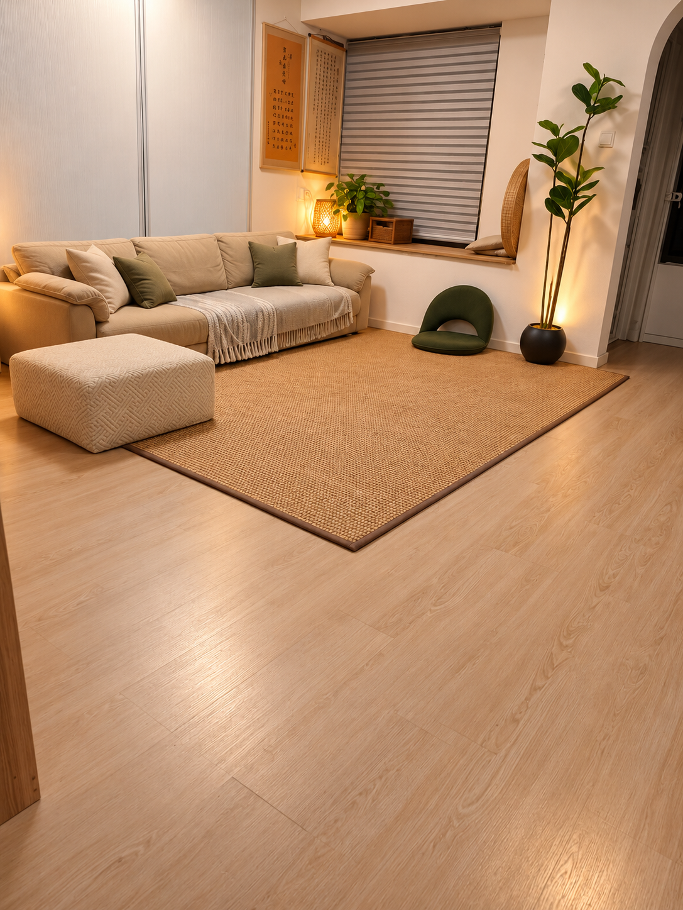
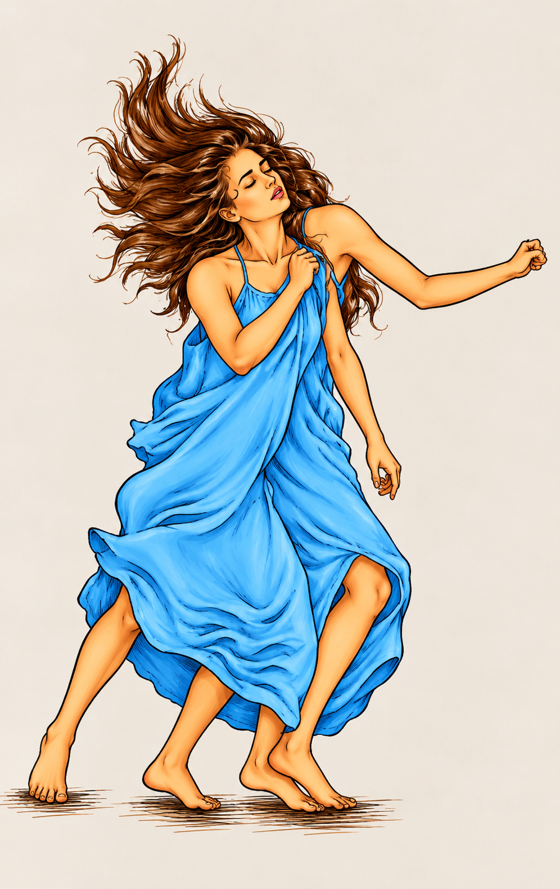
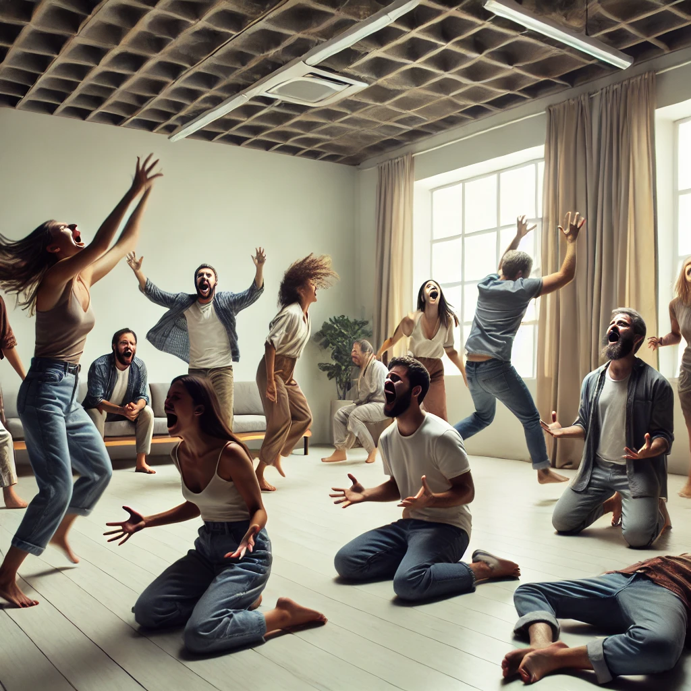
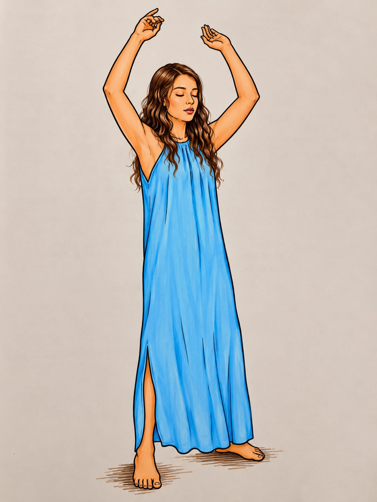
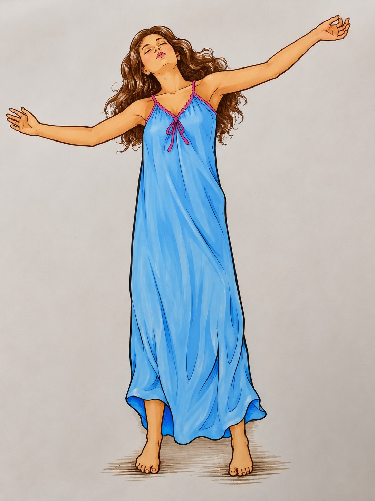

第三部分 · 第1章《觉醒的两种有力的方法》
动态静心
以混乱呼吸、宣泄、呼声、静止与庆祝，把“做”带到极致，再进入不做与观照。
练习方式
按顺序阅读：先看这一阶段的说明，再看对应动作图。正式练习时可播放页面下方的练习音频。
准备
准备工作
找到一个安静私密的空间。穿上舒适的衣服，确保没有任何干扰，适合自由活动。

第 1 步
第一步：混乱呼吸（10分钟）
第一阶段约10分钟：快速、深入、无固定节奏地呼吸，身体保持放松。

第 2 步
第二步：宣泄（10分钟）
第二阶段约10分钟：让被压抑的能量通过声音与身体自由表达。

第 3 步
第三步：跳跃（10分钟）
第三阶段约10分钟：举臂跳跃，以“呼（Hoo）”的声音全然投入。

第 4 步
第四步：静止（15分钟）
第四阶段约15分钟：停止，保持当下姿势，只观照发生的一切。

第 5 步
第五步：庆祝（15分钟）
第五阶段约15分钟：以音乐与舞蹈庆祝。
不要丢掉观照
方法只是入口。无论是呼吸、舞蹈、声音、黑暗、静坐还是关系，最重要的是逐渐看见“正在发生什么”，而不是只追求某种体验。
方法只是入口。无论是呼吸、舞蹈、声音、黑暗、静坐还是关系，最重要的是逐渐看见“正在发生什么”，而不是只追求某种体验。
身体安全提示（网站补充）
以舒适和安全为先。出现明显眩晕、疼痛、呼吸困难或失去平衡时停止。强烈呼吸、旋转或屏息练习不适合所有人。
以舒适和安全为先。出现明显眩晕、疼痛、呼吸困难或失去平衡时停止。强烈呼吸、旋转或屏息练习不适合所有人。
第一次练习先看 · 视频说明
视频主要用来了解动作、阶段和姿势。看懂以后，正式静心时建议使用练习音频，不需要一直看屏幕。